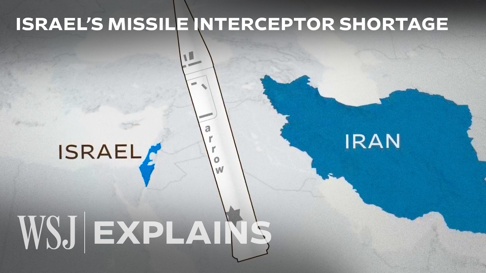

【伊朗导弹数量远超以色列拦截弹库存，局势将如何发展？ | WSJ】
Summary: Although Israel’s defense systems have proven temporarily effective, they face a long-term risk of interceptor missile shortages. The growing consumption of ammunition by both the U.S. and Israel has raised concerns about the sustainability of their defensive capabilities. This article analyzes the impact of interceptor shortages on Israel, its allies, and the broader Middle East situation, and provides a detailed overview of the Israeli military’s multi-layered air defense system and current operational priorities.
摘要： 以色列防御系统虽暂时有效，但面临拦截弹库存不足的长期隐患，美以两国弹药消耗加剧引发对持续防御能力的担忧。本文解析拦截弹短缺对以色列、盟友及中东局势的影响，并详细介绍以军多层防空体系及当前作战重点。

⏱️ Estimated Reading Time: 7 min
📚 六级生词 📚 雅思生词 📚 托福生词 📚 专八生词 📚 SAT生词 📚 考研生词 📚 GRE生词 📚 高考生词
(sirens blare) - For days, Israel's defenses have largely held up against Iran's missile attacks.
连日来，以色列防御系统基本成功抵御了伊朗的导弹袭击。
But there's a growing concern that Israel is burning through its defensive weapons and its Arrow interceptors, which play a key role in taking out Iran's ballistic missiles are in short supply according to a US official.
但美方官员指出，以色列正快速消耗防御武器，其拦截伊朗弹道导弹的关键装备"箭"式拦截弹面临短缺。
(missile booms) The United States, which has been helping Israel shoot down threats is also expending its munitions.
（导弹爆炸声）协助以色列拦截威胁的美国也在持续消耗弹药。
The US official and analysts familiar with the numbers say that Iran has more missiles than Israel and the US have interceptors, raising concerns about Israel's ability to defend itself long term.
了解内情的美国官员和分析师表示，伊朗导弹数量超过美以拦截弹库存，引发对以色列长期防御能力的担忧。
So here's what the interceptor shortfall means for Israel, its allies, and the broader Middle East.
以下是拦截弹短缺对以色列、盟友及更广泛中东地区的影响。
Israel uses different systems to provide a multi-layered defense of its airspace.
以色列采用多套系统构建多层次空防体系。
The Arrow 3 is considered the crown jewel of this network.
"箭-3"系统被视为该防御网络的王牌装备。
With a range of about 1,500 miles, the Arrow 3 is used to counter long-range ballistic missiles, including those that fly above the Earth's atmosphere.
射程约1500英里的"箭-3"用于拦截包括大气层外飞行的远程弹道导弹。
Arrow 3 has been critical in countering attacks from Iran and Yemen, and it can intercept threats before they cross into Israel's airspace.
"箭-3"在对抗伊朗和也门袭击中发挥关键作用，可在威胁进入领空前实施拦截。
The Arrow 2, an older version of the system, is also used to intercept short to medium range ballistic missiles.
早期型号"箭-2"则用于拦截中短程弹道导弹。
Then there's David's Sling, primarily used to counter medium range ballistic missiles among other threats.
"大卫投石器"系统主要应对中程弹道导弹等威胁。
And finally, the Iron Dome, which is used to shoot down short range threats like rockets from Gaza.
最后是拦截加沙火箭弹等短程威胁的"铁穹"系统。
Experts say the Iron Dome is not playing a major role in this current conflict with Iran, and that the Arrow systems and David's Sling have been key.
专家指出当前与伊朗的冲突中"铁穹"作用有限，"箭"系列与"大卫投石器"才是关键。
Even though some missiles have slipped through, Israel's layered defense has proven to be extremely effective.
尽管有漏网之鱼，以色列的多层防御已被证明极其有效。
Israel says its interception rate for ballistic missiles is about 90%.
以方宣称对弹道导弹的拦截率约90%。
And of the 370 missiles fired by Iran in recent days, about 30 have made an impact as of June 17th.
截至6月17日，伊朗近期发射的370枚导弹中约30枚命中目标。
But as Tom Karako, the director of the Missile Defense Project at CSIS, put it to me, the capability is not the question.
但正如CSIS导弹防御项目主任Tom Karako所言，问题不在于能力。
It's the capacity that matters.
而在于库存容量。
And capacity could be a huge problem because arrows play a key role in shooting down not just Iran's ballistic missiles,
库存可能成为重大隐患，因"箭"系统不仅用于拦截伊朗弹道导弹，
(protestors chant in foreign language) - but also threats from Iranian proxy groups like the Houthis in Yemen.
（抗议者外语口号声）还负责应对也门胡塞武装等伊朗代理组织的威胁。
In a statement, the Israeli Defense Forces said, "The IDF is prepared and ready to handle any scenario.
以色列国防军声明称："IDF已做好应对任何情况的准备。
Unfortunately, we are unable to comment on matters related to munitions."
但无法就弹药相关问题置评。"
Israel doesn't talk about how many interceptors it has because of its enemies knew that number, they would know how many missiles to fire at the country.
以色列从不透露拦截弹数量，以防敌人据此推算需要发射的导弹量。
(man speaks foreign language) - The company that makes the Arrow interceptors, IAI, did not respond to requests for comment.
（男子外语发言）"箭"系统制造商IAI未回应置评请求。
Back in December, Israel's defense ministry struck a deal with IAI to make more Arrow 3 interceptors.
去年12月以色列国防部与IAI达成增产"箭-3"协议。
However, the arrows are complex missiles that cost more than $2 million a piece and take time to produce.
但每枚造价超200万美元的"箭"系统生产工艺复杂耗时。
Analysts say, in general, defensive weapons are harder and more expensive to make than offensive weapons because they have to be more sophisticated and more precise than the missiles they're designed to take out.
分析师指出防御武器通常比进攻武器更难制造且更昂贵，因其需比目标导弹更精密精确。
Plus, in some cases, you have to fire several interceptors in order to neutralize a missile.
某些情况下还需发射多枚拦截弹才能摧毁一枚导弹。
(people speak foreign language) - [Shelby] That's why Israel has been focused on taking out Iran's missile and drone capabilities on the ground during its aerial campaign.
（人群外语发言）[谢尔比]因此以色列空袭重点打击伊朗地面导弹与无人机设施。
The IDF says it has dismantled more than 1/3 of Iran's missile launchers.
IDF宣称已摧毁伊朗超1/3导弹发射装置。
But Iran has still been able to launch volleys of missiles at Israel.
但伊朗仍能向以色列发动导弹齐射。
The United States, aware of Israel's interceptor capacity issues for months, has been augmenting the country's defenses.
早已知晓以方拦截弹问题的美国数月来持续增强其防御。
[谢尔比]我们对美国部署的防御系统充满感激。
[谢尔比]陆基"萨德"系统可拦截大气层内外导弹。
And the US has sent Navy ships into the region which can counter missiles with SM-2, SM-3, and SM-6 interceptors.
美军还向该地区派遣配备SM-2/SM-3/SM-6拦截弹的海军舰艇。
Plus, fighter jets can shoot down drones, missiles, and other threats.
战斗机亦可击落无人机、导弹等威胁。
我可以权威地说，过去四天伊朗向人口中心发射弹道导弹期间，这些系统拯救了数百甚至数千生命。
But US interceptors aren't unlimited either.
但美方拦截弹也非无限供应。
For example, defense documents show that the US has only procured about 600 THAAD interceptors to date.
例如国防文件显示美国迄今仅采购约600枚"萨德"拦截弹。
So what does all of this mean for the current conflict in the Middle East?
这对当前中东冲突意味着什么？
-我们并非寻求停火，我未说过寻求停火。
Remember, Iran cannot have a nuclear nuclear weapon.
记住，伊朗绝不能拥有核武器。
It's very simple.
道理很简单。
Analysts say that whatever happens, officials need to act fast to end the war because the US and Israel can't afford to sit and intercept missiles for an extended period of time.
分析师指出无论局势如何，当局都需尽快结束战争，因美以无法长期承受持续拦截导弹的消耗。
(pensive music)
（沉思音乐）